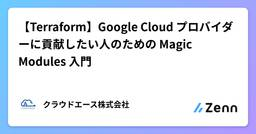
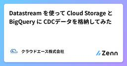
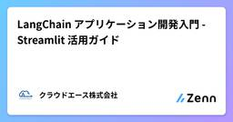
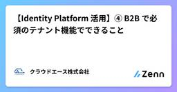
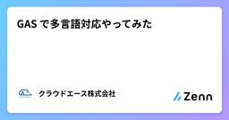
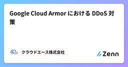

クラウドエース株式会社さんのフィード
https://zenn.dev/cloud_ace
クラウドエース株式会社 公式技術ブログです。 ※本サイトに掲載されている商品またはサービスなどの名称は、各社の商標または登録商標です。
フィード

【Terraform】Google Cloud プロバイダーに貢献したい人のための Magic Modules 入門
クラウドエース株式会社さんのフィード
ご挨拶こんにちは、クラウドエース株式会社 第一開発部の谷口友哉です。本記事では、Magic Modules という Google の OSS について取り上げます。https://github.com/GoogleCloudPlatform/magic-modules 本記事について皆さんは、Terraform で Google Cloud の環境を構築している時にプロバイダーのバグに遭遇したことはあるでしょうか。私は何度か経験があり、その原因は様々ですが、時にはプロバイダー側の実装が誤っていたことが判明することもあります。大抵はプロバイダーのバージョンを上げれば修正さ...
17時間前

Datastream を使って Cloud Storage と BigQuery に CDCデータを格納してみた
クラウドエース株式会社さんのフィード
はじめにこんにちは。クラウドエース第三開発部の工藤です。今回は Datastream を使って Cloud SQL for PostgreSQL の Change data capture（以下、CDC）データを Cloud Storage と BigQuery に格納する方法を紹介します。 CDC とはソースとなるデータベースに加えられた変更をリアルタイムで記録し、追跡する手法です。DB で発生した変更情報（INSERT、UPDATE、DELETE など）を追跡できます。データベース複製や ETL 処理とは異なり、CDC は変更が発生したデータのみを抽出するため、デー...
2日前

LangChain アプリケーション開発入門 - Streamlit 活用ガイド
クラウドエース株式会社さんのフィード
はじめに最近、Large Language Models (LLM, 大規模言語モデル)を活用する機会が増えてきたことをきっかけに、LangChain の機能を試してみました。フロントエンドエンジニアとして働く私のような初心者でも LangChain を試すことができるよう、基本的な内容をまとめ、簡単なサンプルコードをご紹介させていただきます。これから LangChain の学習を始める方の参考になれば幸いです。 対象読者LangChain に興味があるものの、始め方がわからない方LLM を活用したアプリケーション開発に興味がある方Python でのプログラミング経...
2日前

【Identity Platform 活用】④ B2B で必須のテナント機能でできること
クラウドエース株式会社さんのフィード
1. はじめにこんにちは、クラウドエース第三開発部の秋庭です。前回の記事では、Identity Platform の多要素認証を活用する方法をご紹介しました。今回は Identity Platform のテナント機能についてご紹介できればと思います。前回の記事はこちらになります。https://zenn.dev/cloud_ace/articles/c65abf3ca87336現代のアプリケーション開発において、セキュリティとユーザー管理は極めて重要です。特に、複数の顧客や組織を一元的に管理するマルチテナント環境では、効率的かつ安全なユーザー管理が求められます。Ident...
3日前

GAS で多言語対応やってみた 1
1
クラウドエース株式会社さんのフィード
はじめにクラウドエース第三開発部の角谷（かどたに）です。Google Apps Script（以下、GAS）を使用した開発において、多言語対応をやってみたのでその方法を紹介します。 対象読者GAS 開発を行っている方（特に ASIDE を使用する方）GAS で多言語対応を行いたい方ASIDE 環境で外部の npm パッケージを使用したい方 手順 前提条件Node.js がインストールされている 手順 1. ASIDE で GAS の開発環境を構築今回は ASIDE というフレームワークを用いて、GAS の開発環境を構築します。ASIDE: ...
3日前

Google Cloud Armor における DDoS 対策 1
クラウドエース株式会社さんのフィード
はじめにこんにちは、クラウドエースの suki.(18)です。今回は、Google Cloud Armor を活用して DDoS 攻撃を防ぐ方法について、何十回の夜を過ごしたって得られぬようなベストプラクティスを紹介します。本記事では、コンソールを使った設定方法を中心に解説します。 Google Cloud Armor とはGoogle Cloud Armor は、Google Cloud で提供されているセキュリティサービスです。Web アプリケーションや API を保護するための機能を提供しており、DDoS 攻撃や不正アクセスからアプリケーションを保護できます。...
5日前

Google Cloud に OpenShift をデプロイする
クラウドエース株式会社さんのフィード
クラウドエースの岸本です。この記事では Google Cloud の Compute Engine を利用して OpenShift Container Platform 4.17 をデプロイする手順を解説します。公式のドキュメントを参考にしながら、構築していきます。!この記事は、Google Cloud 上に検証用に OpenShift をデプロイするための手順を記載しています。クラスタ設計や通信のセキュリティ設定などを考慮していないため、本番環境での利用は推奨されません。 前提条件Google Cloud の Cloud Shell を利用すること作成者が Goo...
8日前
Professional Data Engineer 完全攻略ガイド：データ取り込み編
クラウドエース株式会社さんのフィード
はじめにこんにちは、クラウドエース 第三開発部の松本です。普段はデータ基盤や機械学習システムを構築したり、Google Cloud 認定トレーナーとしてトレーニングを提供しています。今回は、Professional Data Engineer 完全攻略ガイドのデータ取り込み編として、データエンジニアリング基礎編に続き、データ取り込みプロダクトを中心に試験対策の内容をご紹介します！尚、前回のデータエンジニアリング基礎編をまだ見ていない方は、以下をぜひご覧ください。https://zenn.dev/cloud_ace/articles/professional-data-eng...
10日前
【Identity Platform 活用】③ セキュリティ強化のための多要素認証導入ガイド
クラウドエース株式会社さんのフィード
1. はじめにこんにちは、クラウドエース第三開発部の秋庭です。前回の記事では、OIDC や SAML 認証を利用し、多様な認証方法に対応する方法をご紹介しました。今回は Identity Platform の多要素認証についてご紹介できればと思います。前回の記事はこちらになります。https://zenn.dev/cloud_ace/articles/9b47b0dab6d3ab今日のユーザー認証において、セキュリティの強化は重要な観点です。セキュリティ強化の手段の一つである多要素認証を Identity Platform で利用する方法、注意点について解説します。以下の...
10日前
Terraform による GitHub の構成変数・シークレットの管理
クラウドエース株式会社さんのフィード
クラウドエースの北野です。 要約Terraform を使って GitHub の構成変数、シークレットを管理して、ワークフローファイルから環境固有の情報を削除する方法を紹介します。本記事では Google Cloud のプロジェクト ID、Workload Identity プールのプロバイダー、サービスアカウントをリポジトリの構成変数で管理して、以下の様に Google Cloud の情報を直接代入しないワークフローで GitHub Actions を実行させます。- name: Authenticate to Google Cloud id: authorizaation-...
10日前
【Identity Platform 活用】② OIDC & SAML プロバイダを登録する 〜LINEログインの実現方法を例に〜
クラウドエース株式会社さんのフィード
1. はじめにこんにちは、クラウドエース第三開発部の秋庭です。今回は Identity Platform の活用方法として、OIDC と SAML プロバイダの登録についてご紹介できればと思います。前回の記事はこちらになります。https://zenn.dev/cloud_ace/articles/6d8d1502d3c90fユーザー認証において、OIDC や SAML を利用した IP プロバイダでのログイン提供はサービスの UX の向上に欠かせません。本記事では、Identity Platform において、OIDC および SAML を使用するプロバイダを登録する方...
12日前
Dataform のアサーションを理解する
クラウドエース株式会社さんのフィード
はじめにこんにちは、クラウドエース株式会社 第一開発部所属の工藤です。本記事では、Dataform のアサーションについてまとめました。この内容を詳しく書いている記事はあまりない印象なので、これから Dataform を使ってみようと考えている方はぜひご覧ください。 Dataform とはDataform は、BigQuery Studio に含まれるプロダクトであり、BigQuery に格納しているデータの加工処理やアサーション等のワークフローを作成できます。また、ワークフローの作成だけでなく、アサーションによるテストやソースコードのバージョン管理などもできます。Da...
16日前
Professional Data Engineer 完全攻略ガイド：データエンジニアリング基礎編
クラウドエース株式会社さんのフィード
はじめにこんにちは、クラウドエース 第三開発部の松本です。普段はデータ基盤や機械学習システムを構築したり、Google Cloud 認定トレーナーとしてトレーニングを提供しています。この度、Google Cloud 認定 Professional Data Engineer 試験の完全攻略ガイドとして、試験対策の重要なポイントを、複数の記事にわたりご紹介していくことにいたしました！今回は、その第一弾として、試験概要とデータエンジニアリングの基礎知識について解説します。また、今後も以下の内容に関する記事を執筆予定ですので、ぜひご期待ください！データ取り込み編データストレ...
17日前
外部 IP を持たない Cloud Build のプライベートプールをインターネットに通信させる方法
クラウドエース株式会社さんのフィード
クラウドエースの北野です。外部 IP を割り当てていない Cloud Build のプライベートプールをインターネットにアクセスさせる方法を紹介します。 要約Cloud Build のプライベートプールから GitHub などインターネットにアクセスする構成は以下の通りです。プライベートサービスアクセスによる VPC ネットワークとプライベートプールのネットワーク接続カスタムルートのエクスポートの有効Compute Engine の NAT 化IP 転送の有効化OS 内の NAT 設定VPC ネットワーク上のプライベートプールの通信を NAT 化した ...
18日前
Server Actions を 使って Next.js で フォーム処理を実装。
クラウドエース株式会社さんのフィード
はじめにこんにちは、クラウドエースの第3開発部に所属している金です。今回は Next.js で Server Actions を使ってフォームの送信処理を行う方法について紹介します。フォームの処理については、これまでの Route Handler を使用したカスタムハンドラーの実装方法でも対応できますが、Server Actions を利用することで、よりシンプルかつ効率的にサーバーサイドの処理を実装することができます。 対象読者Next.js の基礎知識がある方Route Handlers の使用経験がある方Server Functions に興味がある方Ne...
18日前
Terraform 1.10.0 のリリースを読んでみた (1.10.1 ～ 1.10.4 もあるよ)
クラウドエース株式会社さんのフィード
こんにちは、クラウドエース 第一開発部の阿部です。この記事では、2024 年 11 月 27 日にリリースされた Terraform 1.10.0 の変更点についてざっくり説明します。また、合わせて Terraform 1.10.1 ～ 1.10.4 の変更点についても説明します。 Terraform 1.10 のアップグレードに関する注意事項Terraform 1.10 にアップグレードする際の注意事項についての詳細は、Terraform 1.10 のアップグレードガイドを参照してください。下記は、アップグレードガイドに記載されている主な変更点です。 moved ブロッ...
22日前
Google Cloud マスターへの道！最初に学ぶべき Google Cloud アーキテクチャ フレームワーク
クラウドエース株式会社さんのフィード
はじめにこんにちは。クラウドエース株式会社 第一開発部の前山です。アプリケーション開発を中心に、Google Cloud 公式認定トレーナーとしても活動しています。今回は、個人的にイチオシかつ Google Cloud を最大限活用するための必読資料、Google Cloud アーキテクチャ フレームワークをご紹介します。https://cloud.google.com/architecture/framework?hl=ja!本記事は、2025年1月2日時点の情報に基づいています。最新の情報やより詳細な内容を知りたい方は、公式の情報をご確認ください。 対象読者本...
22日前
【Identity Platform 活用】① フロントエンドとバックエンドの役割分担
クラウドエース株式会社さんのフィード
1. はじめにこんにちは、クラウドエース第三開発部の秋庭です。今回は Identity Platform の活用方法についてご紹介できればと思います。現代の Web アプリケーションにおいて、ユーザーの認証と管理は重要な要素です。IDaaS である Identity Platform を活用することで、これらの機能を効率的にアプリケーションに組み込むことが可能です。今回の記事ではフロントエンドとバックエンドの SDK、双方の出来ることの違いを軸に、これらの使い分けについて紹介したいと思います。以下の点については今回の記事で取り扱いませんので、ご了承下さい。Identit...
23日前
GitHub の管理を GitHub Actions から Terraform でやってみた
クラウドエース株式会社さんのフィード
クラウドエースの北野です。GitHub リポジトリ, Team などのリソースを GitHub Actions から Terraform を使って管理する方法を紹介します。 概要本記事では、以下の GitHub リポジトリ、Team と Team のアクセス権限を設定する Terraform コードを GitHub Actions から実行する方法を紹介します。resource "github_repository" "main" { name = <Repository Name> visibility = "private"}resou...
25日前
Terraform の moved ブロック、removed ブロック、import ブロックを活用しよう
クラウドエース株式会社さんのフィード
こんにちは、クラウドエース第三開発部の渡辺です。これまで、Terraform の State 操作は主にコマンドで実行していました。そこで、コード内で State 操作を行う方法を知り、その詳細と使用例を調査しました。本記事では、Terraform の State 操作における moved、import、removed ブロックを解説します。また、Google Cloud 環境でのハンズオン例を紹介します。 対象読者Terraform 初心者: Terraform の基本を学び、State 管理・操作の基礎を理解したい方コマンドで State 操作経験のある方: 既に T...
1ヶ月前